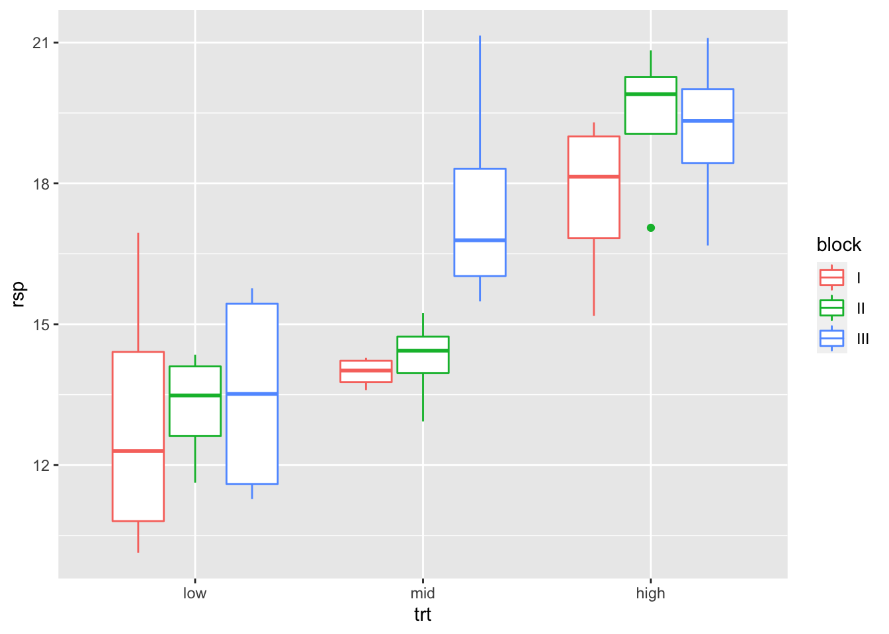
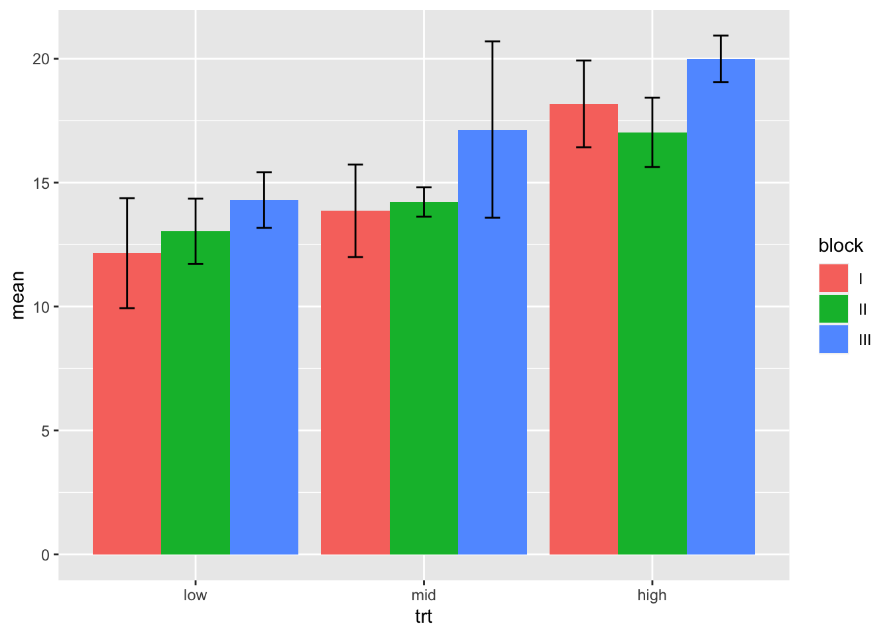
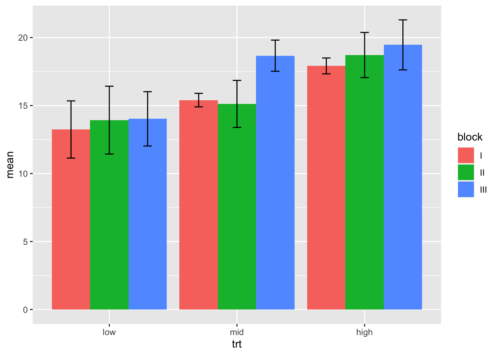
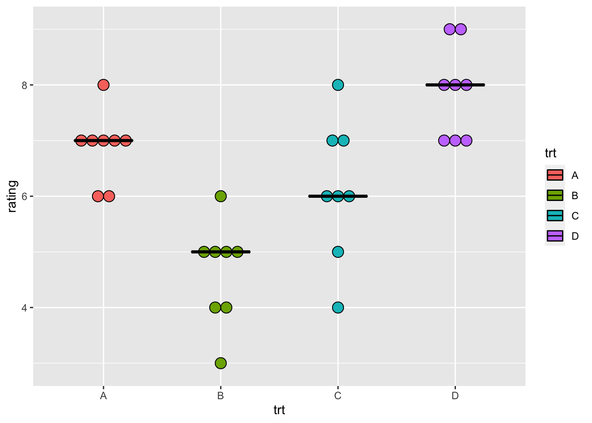

Appendix A — Beispielhafte Auswertungen
Version vom September 14, 2022 um 09:22:21
A.1 Genutzte R Pakete für das Kapitel
Wir wollen folgende R Pakete in diesem Kapitel nutzen.
pacman::p_load(tidyverse, magrittr, readxl,
broom, multcomp, emmeans,
conflicted)
## resolve some conflicts with same function naming
conflict_prefer("select", "dplyr")
conflict_prefer("filter", "dplyr")Am Ende des Kapitels findest du nochmal den gesamten R Code in einem Rutsch zum selber durchführen oder aber kopieren.
A.2 Auswertung von Gewichten
| trt | block | rep | rsp |
|---|---|---|---|
| low | I | 1 | 13.43 |
| low | I | 2 | 13.22 |
| low | I | 3 | 12.94 |
| low | I | 4 | 15.86 |
| low | II | 1 | 13.35 |
| low | II | 2 | 16.20 |
| low | II | 3 | 14.77 |
| low | II | 4 | 11.92 |
| low | III | 1 | 16.05 |
| low | III | 2 | 15.25 |
| low | III | 3 | 13.18 |
| low | III | 4 | 15.61 |
| mid | I | 1 | 14.14 |
| mid | I | 2 | 17.74 |
| mid | I | 3 | 16.86 |
| mid | I | 4 | 11.67 |
| mid | II | 1 | 16.22 |
| mid | II | 2 | 10.43 |
| mid | II | 3 | 15.53 |
| mid | II | 4 | 14.49 |
| mid | III | 1 | 18.59 |
| mid | III | 2 | 18.81 |
| mid | III | 3 | 18.54 |
| mid | III | 4 | 15.64 |
| high | I | 1 | 16.71 |
| high | I | 2 | 16.57 |
| high | I | 3 | 15.68 |
| high | I | 4 | 14.46 |
| high | II | 1 | 17.68 |
| high | II | 2 | 18.04 |
| high | II | 3 | 17.40 |
| high | II | 4 | 20.29 |
| high | III | 1 | 17.98 |
| high | III | 2 | 22.81 |
| high | III | 3 | 19.02 |
| high | III | 4 | 19.97 |
A.2.1 Explorative Datenanalyse (EDA)
ggplot(data_tbl, aes(trt, rsp, color = block)) +
geom_boxplot()
stat_tbl <- data_tbl %>%
group_by(trt, block) %>%
summarise(mean = mean(rsp),
sd = sd(rsp),
se = sd/sqrt(n()))
ggplot(stat_tbl, aes(x = trt, y = mean, fill = block)) +
geom_bar(position = position_dodge(), stat = "identity") +
geom_errorbar(aes(ymin = mean-sd, ymax = mean+sd),
width = 0.2,
position = position_dodge(.9))
A.2.2 Lineares Modell
fit_1 <- lm(rsp ~ trt + block, data = data_tbl)A.2.3 ANOVA
fit_1 %>% anovaAnalysis of Variance Table
Response: rsp
Df Sum Sq Mean Sq F value Pr(>F)
trt 2 85.5383 42.7691 11.93866 0.00014306 ***
block 2 47.6461 23.8231 6.65001 0.00395225 **
Residuals 31 111.0546 3.5824
---
Signif. codes: 0 '***' 0.001 '**' 0.01 '*' 0.05 '.' 0.1 ' ' 1
A.2.4 Gruppenvergleich mit dem multcomp Paket
https://broom.tidymodels.org/reference/tidy.glht.html
fit_1 %>%
glht(linfct = mcp(trt = "Tukey")) %>%
tidy %>%
select(contrast, estimate, adj.p.value) %>%
mutate(across(where(is.numeric), round, 4))# A tibble: 3 × 3
contrast estimate adj.p.value
<chr> <dbl> <dbl>
1 mid - low 1.41 0.179
2 high - low 3.74 0.0001
3 high - mid 2.33 0.0137
A.2.5 Gruppenvergleich mit der emmeans Paket
https://broom.tidymodels.org/reference/tidy.emmGrid.html
fit_1 %>%
emmeans("trt") %>%
contrast(method = "pairwise") %>%
tidy %>%
select(contrast, estimate, adj.p.value) %>%
mutate(across(where(is.numeric), round, 4))# A tibble: 3 × 3
contrast estimate adj.p.value
<chr> <dbl> <dbl>
1 low - mid -1.41 0.179
2 low - high -3.74 0.0001
3 mid - high -2.33 0.0137A.3 Auswertung von Boniturnoten
| variety | block | rating |
|---|---|---|
| A | I | 2 |
| A | I | 3 |
| A | I | 3 |
| A | I | 4 |
| A | I | 1 |
| A | II | 3 |
| A | II | 2 |
| A | II | 2 |
| A | II | 4 |
| A | II | 4 |
| A | III | 2 |
| A | III | 2 |
| A | III | 3 |
| A | III | 1 |
| A | III | 2 |
| B | I | 8 |
| B | I | 9 |
| B | I | 8 |
| B | I | 9 |
| B | I | 7 |
| B | II | 7 |
| B | II | 7 |
| B | II | 8 |
| B | II | 8 |
| B | II | 7 |
| B | III | 8 |
| B | III | 9 |
| B | III | 7 |
| B | III | 9 |
| B | III | 8 |
| C | I | 6 |
| C | I | 5 |
| C | I | 5 |
| C | I | 6 |
| C | I | 4 |
| C | II | 4 |
| C | II | 5 |
| C | II | 3 |
| C | II | 6 |
| C | II | 4 |
| C | III | 7 |
| C | III | 6 |
| C | III | 4 |
| C | III | 6 |
| C | III | 4 |
| D | I | 2 |
| D | I | 4 |
| D | I | 1 |
| D | I | 2 |
| D | I | 2 |
| D | II | 2 |
| D | II | 4 |
| D | II | 4 |
| D | II | 1 |
| D | II | 3 |
| D | III | 3 |
| D | III | 4 |
| D | III | 2 |
| D | III | 1 |
| D | III | 3 |
| E | I | 4 |
| E | I | 4 |
| E | I | 2 |
| E | I | 7 |
| E | I | 5 |
| E | II | 4 |
| E | II | 3 |
| E | II | 4 |
| E | II | 7 |
| E | II | 7 |
| E | III | 5 |
| E | III | 5 |
| E | III | 4 |
| E | III | 6 |
| E | III | 6 |
A.3.1 Explorative Datenanalyse (EDA)
ggplot(data_tbl, aes(variety, rating, color = block)) +
geom_boxplot() +
geom_dotplot(aes(fill = block), binaxis = "y", stackdir='center',
position=position_dodge(0.8)) 
ggplot(data_tbl, aes(variety, rating, fill = block)) +
geom_dotplot(binaxis = "y", stackdir='center',
position=position_dodge(0.8)) +
stat_summary(fun = median, fun.min = median, fun.max = median,
geom = "crossbar", width = 0.5,
position=position_dodge(0.8)) 
A.3.2 Friedman Test
#friedman.test(rating ~ variety | block, data = data_tbl)
data_tbl <- tibble(Block = 1:4,
Sorte_1 = c(2,3,4,3),
Sorte_2 = c(7,9,8,9),
Sorte_3 = c(6,5,4,7),
Sorte_4 = c(2,4,1,2),
Sorte_5 = c(4,5,3,7)) %>%
gather(key, value, Sorte_1:Sorte_5)
friedman.test(value ~ key | Block, data = data_tbl)
Friedman rank sum test
data: value and key and Block
Friedman chi-squared = 13.5263, df = 4, p-value = 0.0089709